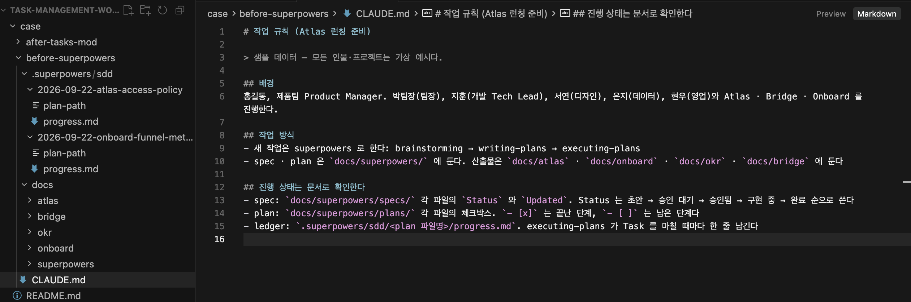
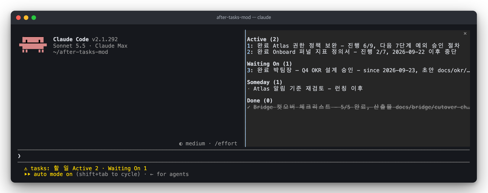

AI에 맡긴 일
더 많은 일을 AI에 맡겼다
동시에 진행하는 일과 맡기는 범위가 늘었다.
AI 인사이트 공유회
AI와 일하며 작업 관리 방식을 바꿔 본 경험
(claude productivity plugin, claude mods)
01 · 오늘의 이야기
AI에 맡긴 일
동시에 진행하는 일과 맡기는 범위가 늘었다.
진행 상황을 챙기는 일
Jira 티켓과 문서를 찾아 확인하는 일을 자꾸 놓쳤다.
작업 화면에서 바로 관리
터미널 세션에서 작업 목록을 보고 상태를 갱신하니, 다른 일로 방향이 바뀌는 경우도 줄었다.
현재 할 일을 바로 보고 상태를 갱신하니,
하던 일을 끝까지 이어 가기 쉬워졌다.
02 · 회고
~2025 상반기
AI는 검색·설계 보조
2025.11–2026.04
agent마다 역할을 맡겨 팀처럼 사용
2026.05–현재
AI가 실행하고, 나는 방향과 계획을 정하며 결과를 검토·승인
맡기는 일은 늘었다. 진행 상황을 챙길 여력도 함께 늘었을까?
일하는 방식이 달라진 시점을 정리했다. 초기 시기는 기억을 바탕으로 적었다.
03 · 회고 — 실제 협업 방식
나 + AI
무엇을 만들고 어떻게 진행할지 함께 정하기
AI
계획대로 구현하고 제대로 동작하는지 확인하기
나 + AI
만든 결과가 요구사항에 맞는지 함께 확인하기
Jira로 진행 상황을 관리하고, superpowers·Matt Pocock skills로 작업 단계를 반복했다.
작업 절차와 관리 도구는 이미 있었다.
현재 진행 상황은 티켓과 문서를 찾아 확인해야 했다.
04 · 알고 있던 부담
진행 상황 관리
지금 할 일과 대기 중인 일을 파악하고,
작업 목록의 상태를 맞춰야 했다.
결과 확인
무엇을 만들었고 어떻게 동작하는지
이해하고 확인해야 했다.
맡긴 일이 늘면 진행 상황을 챙기는 일도 함께 늘었다.
이번 이야기는 진행 상황을 관리하는 방식을 바꿔 본 경험이다.
05 · 고백
안 써 보면 AI 활용에 대한 ‘학습 부채’가 쌓이는 것 같았다.
어디까지 시도하고 맡길지는 아직 답을 찾는 중이다.
“확인해야 될 것도 많다… 과부하”2026-06-15 회고
우선, 이미 맡긴 일을 놓치지 않도록 관리 방식부터 바꿔 봤다.
06 · 어디서 놓쳤나
확인하려면 이동
어디까지 했는지 보려면 다른 화면이나 파일을 열어야 했다.
산출물이 늘어남
문서 위치를 찾기 어려워지고, 목록 상태도 실제 작업과 어긋났다.
현재 작업이 안 보임
지금 하던 일을 끝내기 전에 다른 일을 시작하는 경우가 있었다.
지금 할 일과 진행 상황이 작업하는 화면에서 바로 보여야 했다.
07 · 시도 1 · 목록 통합
productivity plugin · Anthropic(Claude) 공식 plugin · 2026-01-30 출시
작업·일정·개인 맥락을 관리하는 업무 생산성 plugin.
작업 목록
Active · Waiting On
Someday · Done
배경 정보
관련된 사람 · 용어 · 프로젝트 배경
목록 보기
같은 목록을 칸반 화면으로 확인
productivity plugin으로 현재 작업과 배경 정보를 파일에 모았다.
팀과 공유하는 업무 상태는 계속 Jira에서 관리했다.
08 · 그래도 남은 불편
“일에 집중하다 보면 업데이트를
자꾸 잊거나 뒤로 미루게 됐다.”개인 실사용 후기
목록 확인
작업 중인 터미널 화면에서는 현재 할 일이 바로 보이지 않았다.
상태 갱신
작업에 집중하다 보면 목록 확인과 갱신을 뒤로 미루게 됐다.
목록을 모아 두는 것만으로는 작업 중에 계속 보이지 않았다.
09 · 시도 2 · 작업 화면 연결
Claude Code mods · Claude 공식 plugin 확장 기능 · 2026-09-09 사전 공개 · 2026-10-01 정식 출시
JavaScript·TypeScript로 Claude Code의 화면과 동작을 바꾸는 확장 방식.
목록 보기
현재 작업을 작업 화면에서 본다.
AI에 전달
프롬프트를 보낼 때 함께 전달한다.
상태 반영
같은 목록에 작업 상태를 남긴다.
갱신 상기
작업 변경을 감지했는데도 목록이 그대로면
한 번 갱신을 요청한다.
Claude Code mods로 tasks mod를 만들어 연결했다.
10 · Before · 목록 통합 전
진행 상황 확인 위치spec · plan · ledger, 9개 문서
확인 방식상태·체크박스·진행 기록 대조
다음 작업남은 단계를 문서에서 찾기

기록은 있었지만, 현재 작업을 파악하려면 관련 문서를 찾아봐야 했다.
11 · After · 목록 통합 + 화면 연결 후
진행 상황 확인 위치TASKS.md에 모은 진행 요약
확인 방식pane에서 진행·대기 항목 확인
다음 작업Atlas 6/9 → 다음 7단계

문서를 찾아 확인하던 현재 작업과 다음 단계가, 작업 화면에 함께 보였다.
12 · 느낀 변화와 남은 부담
느낀 변화
현재 작업을 파악하고
하던 일을 이어 가기 쉬워졌다.
남은 부담
기록 내용 확인
결과물 검증
개인 실사용에서 느낀 변화
13 · 결론
맡긴 일이 늘수록 현재 작업과 진행 상황을 놓치기 쉬웠다.
목록을 작업 화면에서 바로 보고 갱신하니,
하던 일을 끝까지 이어 가기 쉬워졌다.
무엇을 맡겼고, 어디까지 했고,
다음에 무엇을 할지 계속 파악하는 것이 필요했다.
얼마나 맡길지는 아직 답을 찾는 중이다. 결과의 정확성 확인도 남는다.
14 · 함께 이야기할 질문
세션을 열었을 때, 지금 할 일이 바로 보이나요?
실제로 진행한 일과 작업 목록의 상태를 어떻게 맞추나요?
새 일을 시작하기 전에, 하던 일을 어떻게 마무리하나요?
참고 01 · 레퍼런스
참고 02 · 레퍼런스